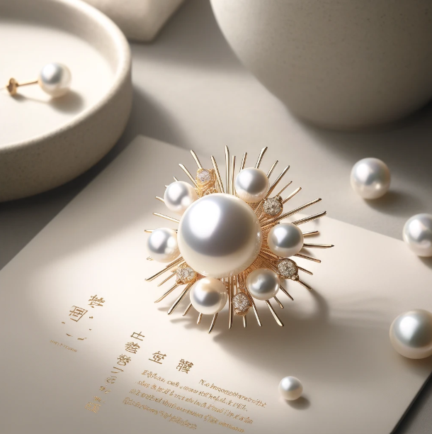
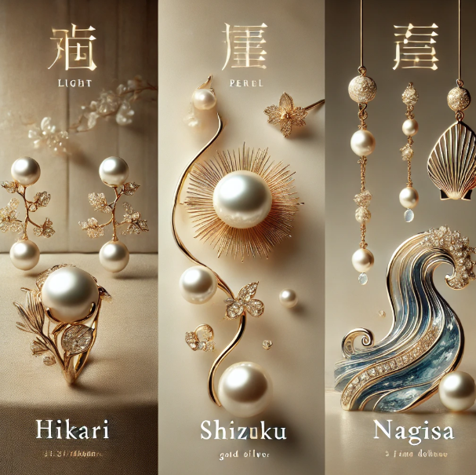

Inspirada en la belleza mística de la luna reflejada en el océano, Tsuki no Umi es una joyería exclusiva especializada en perlas de alta calidad. Cada pieza es una obra de arte que captura la elegancia atemporal y la pureza de la naturaleza, combinando la tradición artesanal con un diseño sofisticado.

Perlas de tonos luminosos en monturas doradas y plateadas.
Delicadas piezas inspiradas en el rocío del mar.
Diseños fluidos con inspiración marina.

Fundada con la visión de capturar la esencia de la luna reflejada en el océano, Tsuki no Umi combina la tradición japonesa con la elegancia moderna. Cada perla es seleccionada con cuidado, asegurando la máxima calidad y brillo, para convertirlas en piezas únicas que cuentan historias de belleza y sofisticación.
📍 Dirección: [Dirección ficticia]
📞 Teléfono: [Número de contacto]
📧 Correo: contacto@tsukinoumi.com
🌐 Sitio web: www.tsukinoumi.com